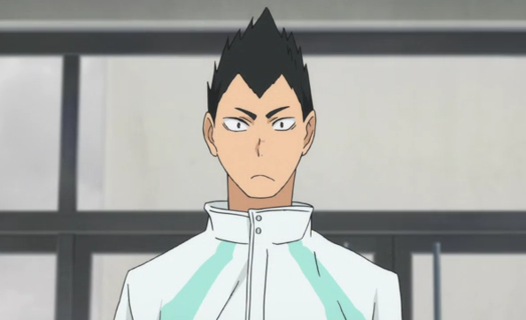
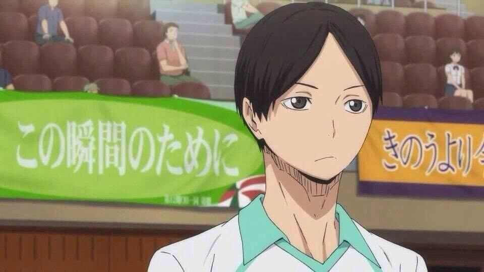
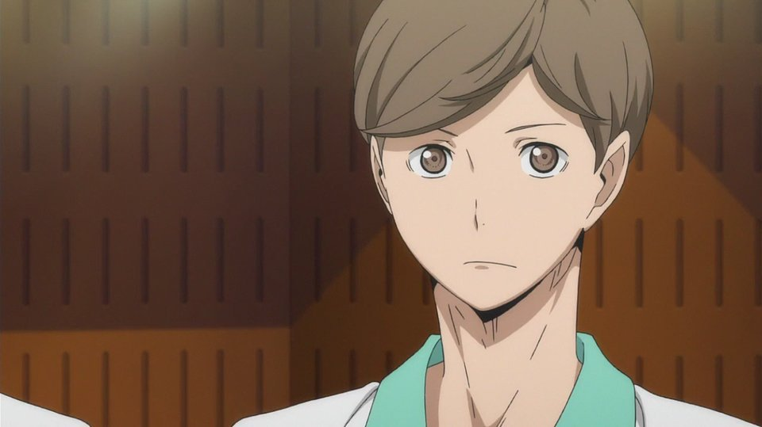
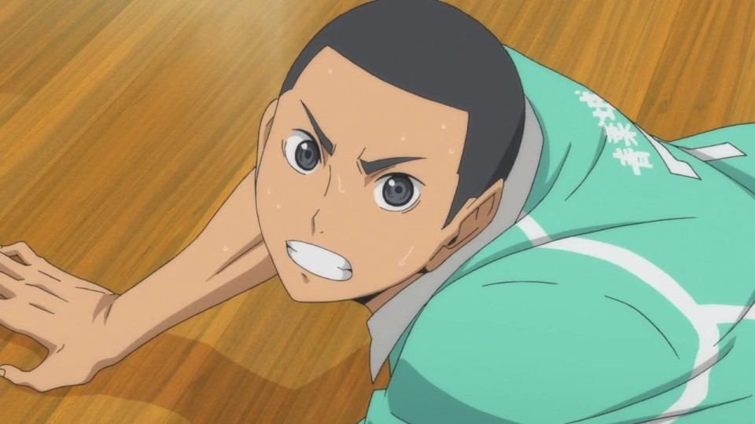
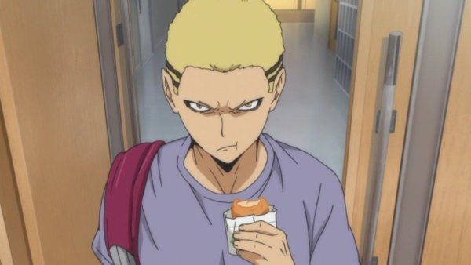
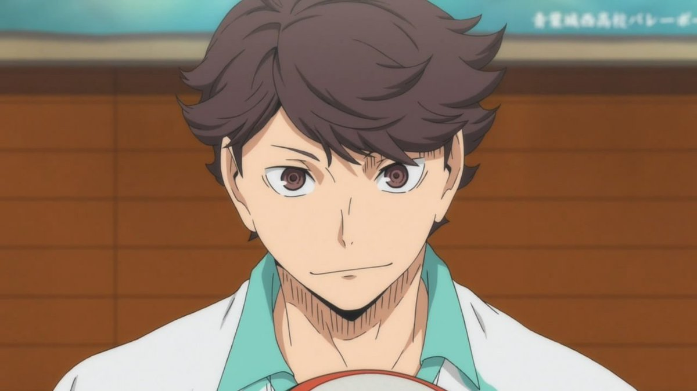
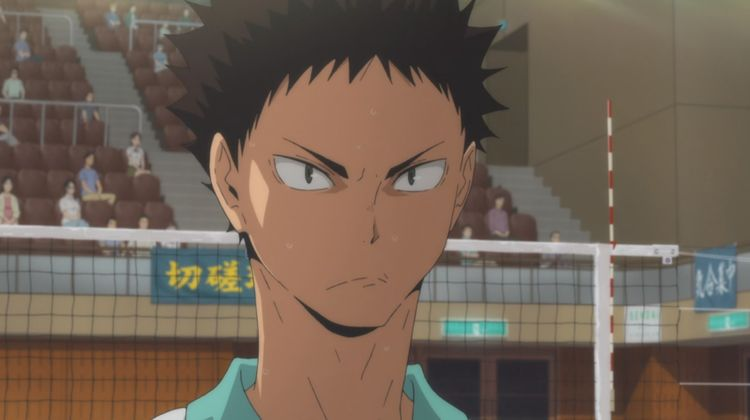
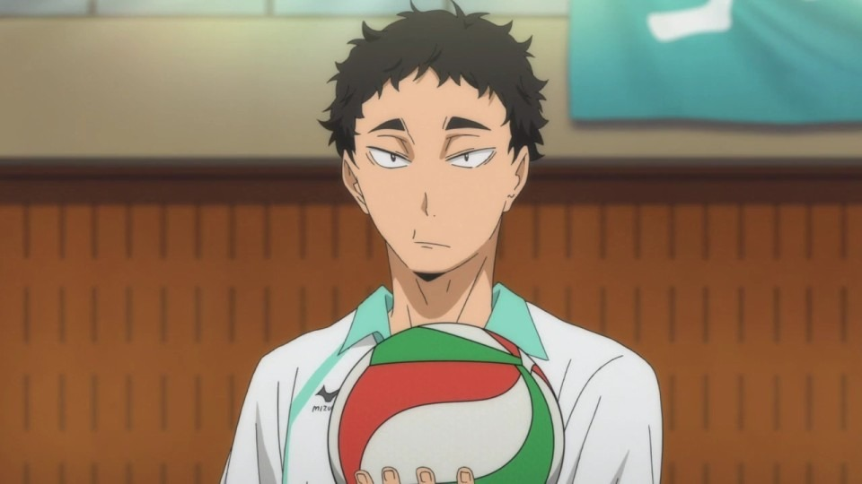
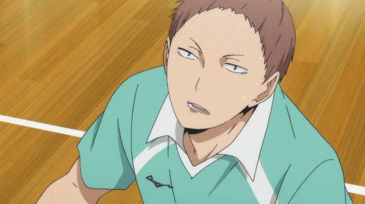

아오바죠사이/팀원
- 킨다이치 유타로
- 쿠니미 아키라
- 야하바 시게루
- 와타리 신지
- 쿄타니 켄타로
- 오이카와 토오루
- 이와이즈미 하지메
- 마츠카와 잇세이
- 하나마키 타카히로
킨다이치 유타로
주인공에게 마음의 상처를 입힌 캐릭터는 1차원적 악역으로 묘사되는 경우가 많은데, 킨다이치는 작품 내에서도 이미지가 나쁘지 않다. 오히려 카게야마의 1차원적 화법(...)이 공개된 후 인성 재평가와 함께 동정표마저 받고 있는 실정. 눈치 빠른 쿠니미와 달리 단순하고 허당인데다(...) 오히려 마음이 약한 편인데, 그래서인지 눈물이 많다.

쿠니미 아키라
무기력하다. 그러나 감정 표현은 확실해서 표정이 은근 다양하다. 특히 질색하는 표정은 확실하게 캐치할 수 있다. 어지간하면 귀찮아서 하고 싶은 말도 안 할 것 같지만, 정말 하고 싶은 말은 꼬박꼬박 한다.또한 엔간한 일에는 별로 놀라거나 흥분하지 않는다. 쿄타니가 결정적인 활약을 했을 때도 유일하게 흥분하지 않고, 오히려 격하게 흥분하는 야하바를 놀란 눈으로 쳐다보았다.

야하바 시게루
다소 경망한 성격이다. 첫 등장부터 카라스노 선수들에 대해서는 모르면서 매니저가 색기 있는 미녀라는 것만 기억하는 가벼운 모습을 보였다. 애니판 기준 2기 20화에서는 야치를 보고 대시하려다 키요코에게 저지당하고 킨다이치에겐 직접적으로 가볍다는 말을 들었다. 쿄타니도 처음에는 야하바를 좀 더 가벼운 녀석이라고 생각했다.

와타리 신지
포지션은 리베로지만 세터 수준의 토스 기술을 가지고 있다. 이미 애니 1기 6화에서 선수들에게 토스를 올려주는 모습을 보였고, 1기 23화 카라스노와의 시합에서 오이카와의 리시브로 인해 세터의 셋업이 불가능할 때, 라인을 아슬아슬하게 비껴 뛰어 셋업했다. 이를 보고 우카이는 와타리가 예전에 세터였거나 세터에 버금가는 연습을 했을거라 추정했다.

쿄타니 켄타로
고등학교 1학년 때 3학년과 충돌을 일으켜[6] 3학년과 사이가 나빠져서 부활동에 나오지 않게 되었다. 부활동에 나오지 않던 기간 동안에도 개인적으로 시민 체육관에서 사회인 팀과 같이 꾸준히 연습한 덕분에 실력은 유지되었다. 그러다가 그 사회인 팀의 키요시 씨의 설득을 듣고 다시 세이죠 배구부로 돌아갔다.

오이카와 토오루
키타가와 제1 중학교 출신으로 카게야마 토비오의 2년 선배이다. 카게야마의 살인서브와 블로킹은 오이카와를 보고 배운 것으로, 서브를 가르쳐 달라는 카게야마의 끈질긴 요청에도 오이카와가 끝까지 가르쳐 주지 않았기 때문에 보고 배우게 되었다.중1의 카게야마는 오이카와를 순수하게 존경했을 뿐이지만, 오이카와는 이때 우시지마에게 밀리던 상황에 천재 후배까지 나타나 열등감과 조바심을 느끼고 있었다.

이와이즈미 하지메
오이카와 토오루와는 초등학교 클럽팀 시절부터 호흡을 맞춰 온 사이. 회상씬을 보면 어릴 때 배에 王자가 써있는 검정 나시를 즐겨 입고 다닌 듯 하다. 손에 들고 있는 잠자리채는 덤. 오이카와가 배구공으로 스파이크를 연습하는 것을 지켜보기만 하다가 어느 순간 같이 배구공을 가지고 논다. 이 때문에, 맨 처음 배구를 시작한 것은 오이카와의 영향이 아니냐는 의견도 있다.

마츠카와 잇세이
관찰력이 특출나게 좋다. 인터하이 예선에서 츠키시마가 전위로 오면 카라스노는 센터 라인을 덜 쓴다는 것을 금세 알아차렸다. 그리고 오이카와는 여기에 하나 더 알아차렸다.히나타가 크로스를 치지 못하게 하고, 히나타가 스트레이트를 선택하면 그 공격을 킨다이치가 리시브한다는 작전을 세워 성공시킨다. 이 작전은 오이카와도 농담반 진담반으로 무섭다고 말할 정도였다.

하나마키 타카히로
덩치 큰 남고생임에도 불구하고 발랄하다는 표현이 어울린다. 또한 장난끼가 많고 배려심도 있다.강한 인상은 아니지만 알게 모르게 쏠쏠히 활약하는 선수이다. 봄고에서 인터하이 때보다 상향된 서브 실력을 보여주었다. 또한 변화구가 특징인 점프 플로터 서브를 언더말고 오버로 붙잡아 빠르게 대처하기도 하고[4], 연재분 131화에서는 세터가 아님에도 자연스럽게 토스를 올리기도 했다.#
특히 리시브를 잘하는데 마지막 한 발을 걷어올리는 결정적인 리시브가 아니라 그저 조용히 연결해주는 리시브를 잘하기 때문에 특별히 눈에 띄지는 않는다.
